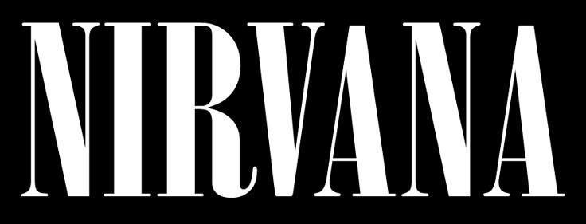
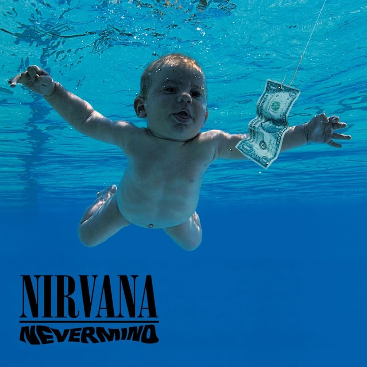
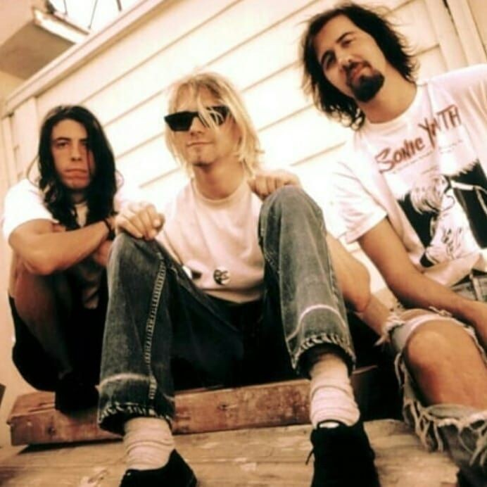

Nevermind

| Title | Length |
|---|---|
| Smells Like Teen Spirit | 5:01 |
| In Bloom | 4:14 |
| Come as You Are | 3:39 |
| Breed | 3:40 |
| Lithium | 4:17 |
| Polly | 2:57 |
| Territorial Pissings | 2:23 |
| Drain You | 3:44 |
| Lounge Act | 2:36 |
| Stay Away | 3:32 |
| On a Plain | 3:16 |
| Something in the Way | 3:52 |
After releasing Bleach in 1989, Nirvana gained underground recognition but remained relatively unknown outside the grunge scene. They toured extensively to promote the album, but tensions arose, particularly with drummer Chad Channing, whose style didn’t fully align with Kurt Cobain’s vision. By mid-1990, Channing left the band, leading Nirvana to briefly work with several drummers, including Dale Crover and Dan Peters. Meanwhile, their growing popularity caught the attention of major labels, and they signed with DGC Records. In September 1990, they met Dave Grohl, who had just left Scream, a Washington, D.C. hardcore band. After auditioning, Grohl immediately clicked with Cobain and Krist Novoselic, solidifying the classic Nirvana lineup that would go on to record Nevermind.

After signing with DGC Records in 1990, Nirvana began working on Nevermind, aiming for a cleaner, more polished sound than Bleach. They teamed up with producer Butch Vig at Smart Studios in Wisconsin before re-recording most of the album at Sound City Studios in Los Angeles in May–June 1991. Unlike Bleach, which had a raw, low-budget production, Nevermind featured layered guitars, dynamic shifts, and powerful drumming from new drummer Dave Grohl, helping define its sound. The final mix was done by Andy Wallace, who added a radio-friendly polish that would later be criticized by Kurt Cobain for being too polished.
Released on September 24, 1991, Nevermind had modest expectations, with DGC initially pressing only 46,000 copies. However, fueled by the unexpected success of "Smells Like Teen Spirit", the album exploded in popularity, selling over 400,000 copies per week by early 1992. By January 1992, it had dethroned Michael Jackson's Dangerous from the No. 1 spot on the Billboard 200, signaling a shift in mainstream music. The album’s massive success not only launched Nirvana into superstardom but also marked the rise of grunge, effectively killing off the dominance of 1980s hair metal. Nevermind remains one of the most influential albums of all time, inspiring countless bands and solidifying Nirvana as the voice of a generation.